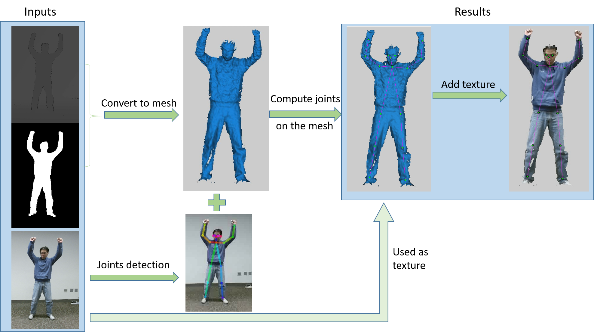

| 3D Body Tracking using Deep Learning |
| Project Description |
|
Although Kinect can do body tracking real time, it cannot tell whether a person
in the view is facing or showing back to the camera. So in practice, this shortcoming
will restrict the popularity in applications that user may turn around. Besides that,
Kinect cannot detect the joints very accurately. While top-down common approaches can handle user
turn around and the accuracy is higher than Kinect, but the computing cost is very
high. To address these, I use a deep learning method to track human body and extract
the main joints information. By using deep learning, I can get more accurate joints
location than Kinect and less computing cost than common top-down approaches.
|
| Pipeline |
|
The system get streaming data from Kinect. From Kinect, we can get RGB color image, depth image and mask image for each frame. The color image is used to detect joints. The depth image is pixel to pixel coordinated with the color image. So the detected joints will be on the same position in the depth image. The depth image can be converted to 3D points cloud and then be converted to a 3D mesh. Finally the 3D mesh with detected joints will be rendered by OpenGL. To make the system efficient, I can only convert the human subject to 3D mesh according to the mask image. |
|  |
| Video demo |